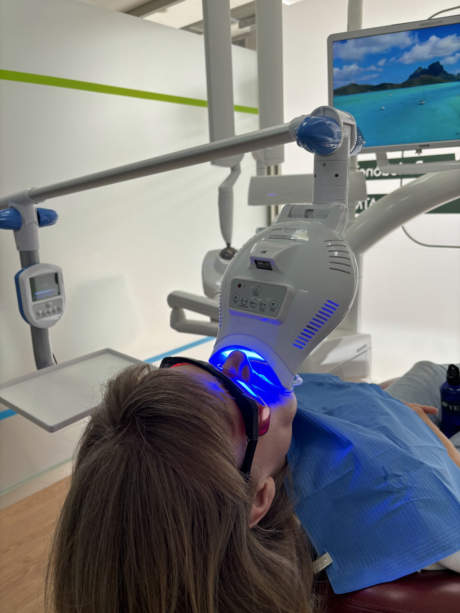
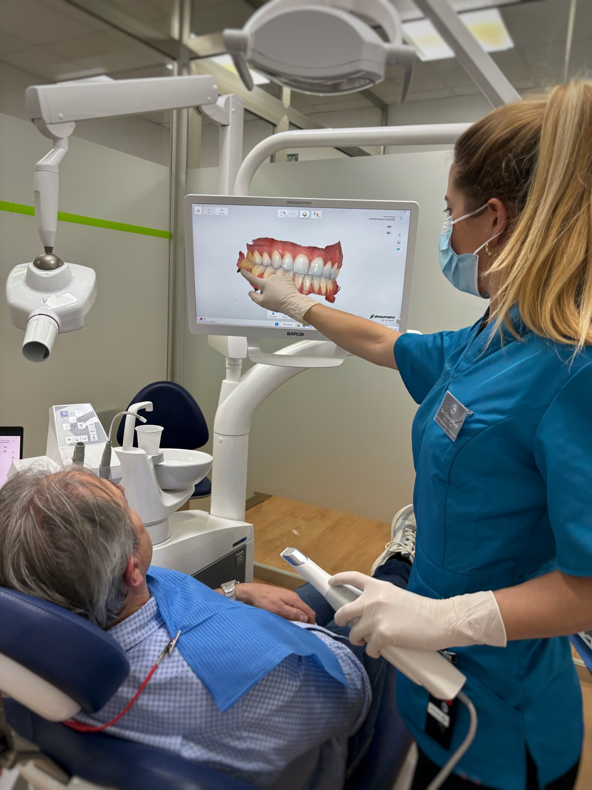

1 · Horitzó (calm-horizon-clinic) — revisada amb referències
Concepte igual que abans, i és el que has triat: la resposta que la clínica ja dona a la por és la pantalla del sostre amb una platja mentre et tracten, i la pàgina es construeix sobre aquesta calma. El que canvia és d'on surten el color i la lletra: ara del rètol de la clínica i de tres webs d'odontologia premiades, no del meu criteri.
Anar al dentista pot ser un dia tranquil.
Odontologia a Inca, amb temps per explicar-t'ho tot abans de començar.
Demana horaPaleta — mostrejada del seu propi rètol
Nit #16294A
dominant
dominant
Verd #9BD154
accent, CTA
accent, CTA
Blau #6FC0DC
secundari, filets
secundari, filets
Blanc #FFFFFF
text
text
Tipografia — del que fan servir les webs premiades
Fotos — 8 de 10



Storyboard de seccions
- Hero — l'horitzó Device: retall panoràmic de
places-10(blanquejament sota la làmpada blava, amb la platja a la pantalla del sostre) a tota amplada i poca alçada, damunt el camp Nit; el titular encavalca la vora de la foto, com al cabinet Gonin Hetzel. Interacció: un filet blau travessa l'horitzó d'esquerra a dreta en carregar (1,2s); amb reduced-motion ja apareix dibuixat. - La por, primer Device: una sola cita de pacient, verbatim i en castellà, a tota amplada sobre Nit, sense cap adorn — «Superados mis miedos gracias a todo el personal». L'única secció sense imatge, a propòsit. Interacció: cap.
- Tractaments Device: un índex tranquil, com el sumari d'un llibre (terme + una línia en paraules normals), no targetes — precisament perquè el veí en fa. Els termes són els de la seva vitrina. Mitjà: places-03. Interacció: cap; l'índex ja és la navegació.
- T'ho ensenyam Device: foto gran de l'escàner 3D amb el pacient mirant la seva pròpia boca a la pantalla, i tres línies al costat. Mitjà: places-02.
- Equip Device: retrats reals encavalcats damunt el camp Nit a fondàries diferents, no alineats en fila ni dins de caixes. Són fotos de mòbil i es tracten com a tals. Mitjà: places-04, places-05, places-08.
[CONFIRM: noms i càrrecs]. - Com reconèixer-la Device: és un local de planta baixa sota els porxos i es passa de llarg; la secció no és «on som» sinó què veuràs quan hi arribis: els porxos i la façana una al costat de l'altra, amb el rètol assenyalat, i l'adreça composta com el mateix rètol — la franja verda i blava reapareix aquí, tancant el cercle amb la seva retolació. Mitjà: places-07, places-01.
- Demana hora Device: la setmana com una graella de set columnes on els blocs oberts s'omplen de verd i els tancats queden buits — de dilluns a dijous s'omplen, de divendres a diumenge no. Es veu d'un cop d'ull. Telèfon gran i clicable a sota.
[CONFIRM: horari partit o seguit].